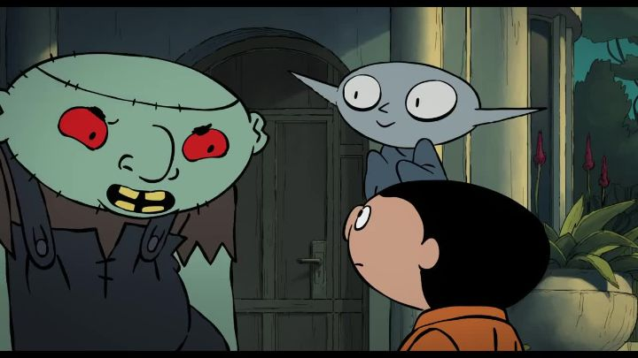

Disclaimer: This is a review of the 2020 French animated film "Little Vampire," based on a comic book series of the same name."Little Vampire" looked like an arbitrary children's movie to me, and likely to most Americans. But in France, it appears to be quite the franchise, based on a popular comic series by Joann Sfar, and with a TV cartoon from a decade prior. Much to my confusion, it does NOT appear to be related to the 2000 live-action film "The Little Vampire," or the 2017 CGI-film "The Little Vampire 3D"; both are based on a German book series by Angela Sommer-Bodenburg. I suppose the idea of a child-vampire is quite popular! Anyway, it's best to assume that this film's subject is as well-known as "Casper the Friendly Ghost" is in North America. The movie starts in a more dramatic fashion than I expected. In a grim swashbuckling sequence, a spoiled prince is about to sacrifice a beautiful woman and her young son to an underground monster for not agreeing to marry him. The mother begs, and offers her life (to anyone who might be listening) to save her son. From the clouds, a ghost pirate ship appears, and a skeleton captain swoops in to save them. Upon boarding his ship, they become the undead, just like his crew, and in their case, they become vampires. Not minding the idea of immortality and eternal youth, the Mother becomes the Captain's wife, and Little Vampire is treated as their son. The Prince isn't finished however, transforming into a monster with a moon-crescent for a head in his thirst for revenge. He chases the pirate ship for centuries, until they finally settle in a modern-day haunted mansion with a magic dome to hide them. And things seem peaceful, except for poor Little Vampire, who has been 10 years old for over 300 years, and is now not allowed to leave the house. Despite being surrounded by a massive disfunctional family of monsters and ghouls, he's quite bored. Against his parents' wishes, he starts sneaking out of the house at night, discovering school, and finds a friend in Michael, a local boy the same age. But the evil Prince has been stalking the town in search of them, and Little Vampire's actions might put his family in danger. I think special credit must be given to Joann Sfar, who is quite the accomplished comic writer and filmmaker. He's written the comics for both "Little Vampire" and "The Rabbi's Cat," among many others, and directed the animated adaptations of both, among many others. In the original French dub, he even acts in "Little Vampire," providing the voice of Marguerite, the goofy and dim Frankenstein character. From the movie alone, I can tell there's a detailed and deep world crafted for these family-friendly characters. And as you can imagine, there's plenty of opportunity for creativity with the monsters. I expected to see the same old archtypes, but the characters, their personalities, and their humor, all felt original.  The story is at its best when it involves the monster Prince and his quest for revenge, whose design and animation almost make him a Disney-worthy villain. Or when it focuses on Little Vampire's adventures, him being both mature and experienced for his age, while still being a 10-year-old at heart. But of course, a lot is spent on Michael, the human boy that Little Vampire becomes friends with. That's the only element that felt boring and predictable. As expected, Michael is a dull character, generally more excited by the monsters than he is afraid of them, and finding ways to relate: "Wow, I'm an orphan, so my parents are dead, like you, except you're undead!" he exclaims. And since Little Vampire hasn't met any humans before, so he's as amazed with him as the viewers would be to vampires and demons. Understandable, but regardless, WE aren't as amazed by the boy, and WE'RE the ones watching. Even so, the movie is surprisingly funny and charming throughout, with a ton of quick jokes, propped up by a colorful world that looks straight out of a beautiful French graphic novel. It's not as high-quality looking as more expensive or experimental works from Japan or the US, but fans of French comics should immediately appreciate the art style. The Bluray released in the US by Shout Factory includes both the original French dub and an English dub. Like most English dubs on French movies, words are spoken quickly to match the French delivery and detailed lip-movement, and feels awkward at best. The original French feels much more natural and is highly recommended."Little Vampire" looks like a discount-level production on the shelf, something you might have your kids watch on Halloween. It might not be world-changing, but it's much better than it might look on the surface, and is a charming movie to watch year-round.
- "Ani" More reviews can be found at : https://2danicritic.github.io/ Previous review: review_Like_The_Clouds,_Like_The_Wind Next review: review_Liz_and_the_Blue_Bird